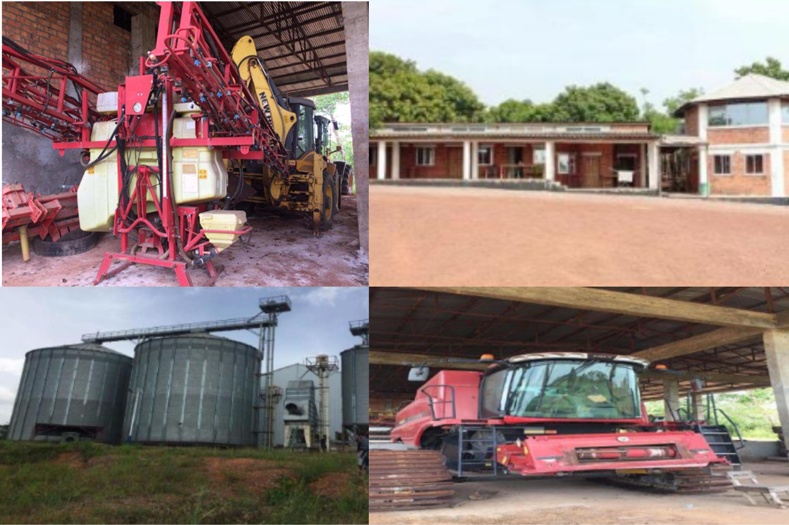

About
Sustainable agriculture, modern farming techniques, and rural development working together to build stronger communities and productive farmland.

About Cape Investment Sierra Ltd.
Cape Investment Sierra Ltd. is a leading agriculture and agribusiness development company based in Freetown, Sierra Leone, dedicated to building large-scale sustainable farming and agro-processing infrastructure.
The project began in 2021 with an initial 10 acres of development, including installation of modern agricultural infrastructure such as:
- Rice milling facilities
- Grain warehouses and storage silos
- Harvesters, tractors and excavators
- Irrigation equipment
- Farm office and residential facilities
Today, the company operates large-scale farming activities across more than 5000 hectares, with an additional 12,500 acres available for agricultural cultivation through long-term lease agreements.
Through a combination of modern farming technology, skilled agricultural expertise and environmentally responsible practices, we have established ourselves as a trusted name in large- scale food production and organic agricultural exports.

Our Vision
To become a global leader in sustainable agriculture and organic food production, connecting African farming excellence with international markets.
Our Mission
- To produce high-quality agricultural products using sustainable methods
- To promote food security and rural development
- To expand global export opportunities for organic produce
- To build an integrated agricultural ecosystem supporting farming, livestock and trade

Our Agricultural Strength
Cape Investment Sierra Ltd. combines large-scale crop production, livestock farming and agro- processing capabilities.
Our core strengths include:
- Rice cultivation on 4000 hectares
- Vegetable and food crop farming on 1000 hectares
- Greenhouse cultivation facilities for sapling development
- Dairy farming with 2000+ cows
- Goat farming with 2000+ goats
- Poultry farming with over 200,000 birds
This integrated agricultural system allows us to ensure consistent food supply, high productivity and export-grade product quality.

Strategic Location Advantage
Our agricultural operations are located in Lunsar, Sierra Leone, approximately:
- 150 km from Freetown (capital city)
- 25 km from Makeni (major commercial city)
The location offers strong connectivity to international ports, airports and regional trade routes, enabling efficient agricultural exports to Europe, Asia and neighboring African countries.
Commitment to Sustainability
Cape Investment Sierra Ltd. is committed to environmentally responsible agriculture, including:
- Soil conservation practices
- Sustainable water and irrigation management
- Responsible livestock care
- Organic farming and natural composting systems